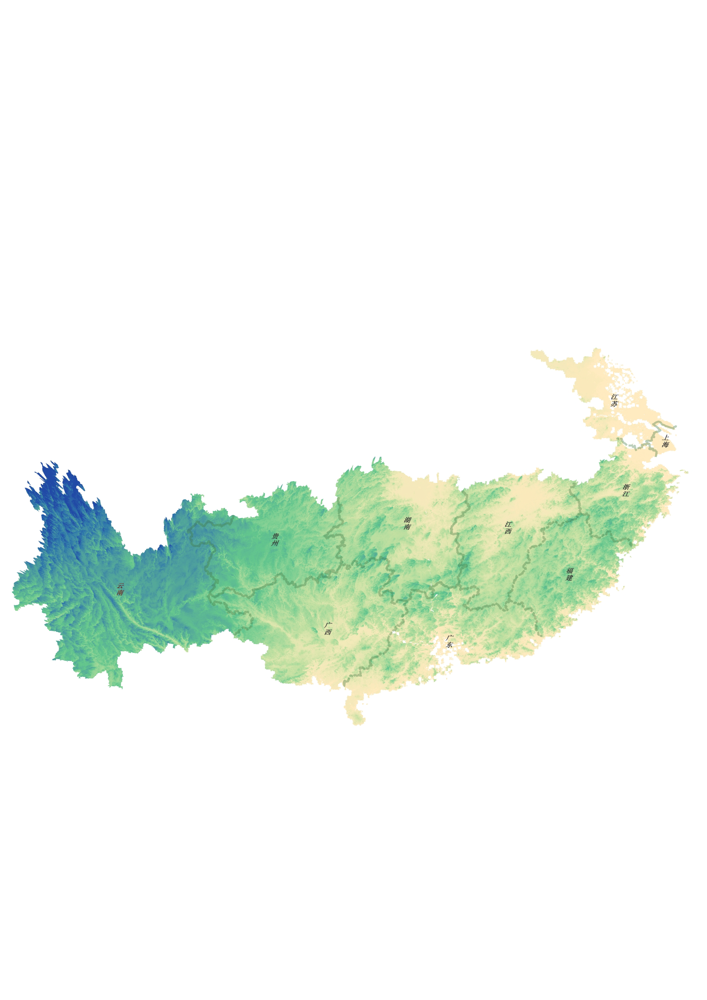

GIS 地图加载中…
探索山河之美 · 记录天地之奇
❧
文学价值
以游记写山河，以文字见天地
《徐霞客游记》不仅是一部地理考察著作，也是一部具有独特文学价值的游记作品。徐霞客以亲身经历为基础，将山川地貌、风土人情与个人感受融入文字之中，形成了细腻、生动而富有感染力的山水描写。
❧
科学价值
以足迹丈量山河，以观察探索自然
徐霞客长期深入实地考察，对山川地貌、水文、岩溶等自然现象进行了大量细致观察和记录。《徐霞客游记》保存了丰富的地理考察资料，对中国地理学、地貌学以及水文研究具有重要价值，也体现了严谨的实地探索精神。
滚轮缩放 · 拖拽平移 · 点击亮点看故事
后期万里遐征 · 1636—1640

这一程
沿途风景
旅途见闻
徐霞客笔记
正在讲述